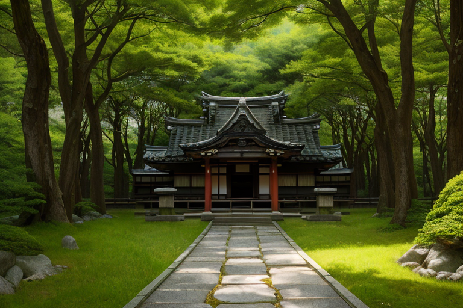
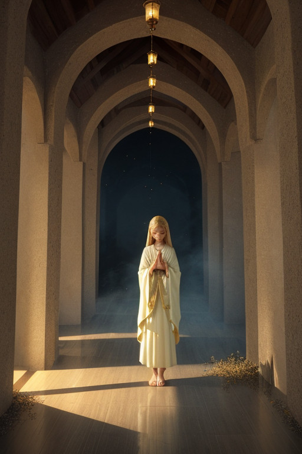
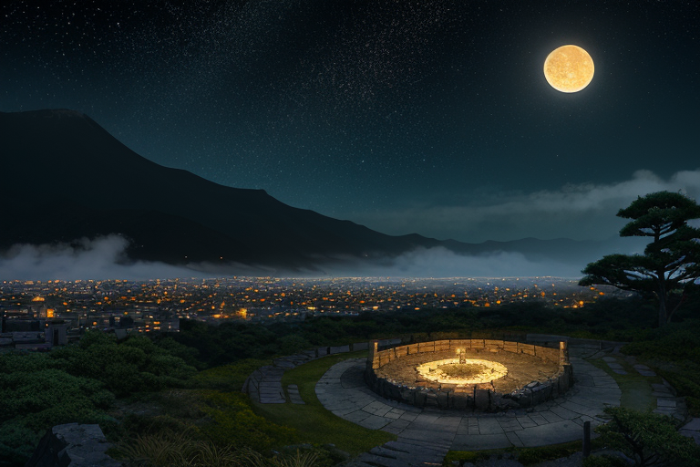
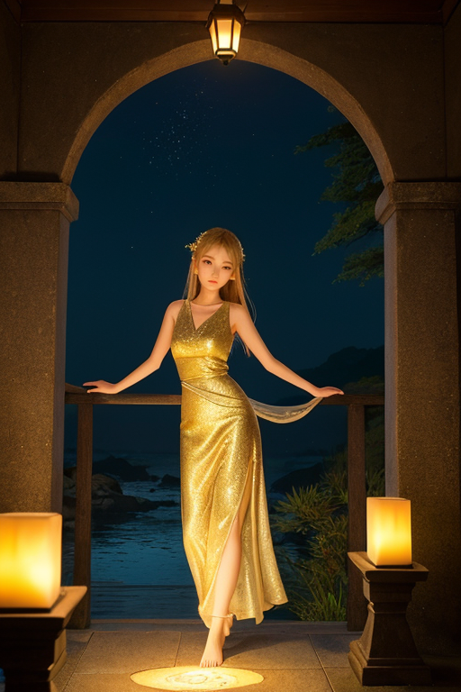

第一章 現実の宮城
あなたはまだ気づいていない。この土地にも、王がいることを。
瑞鳳殿の森は深い静寂に包まれていた。伊達政宗が眠るこの地では、時がゆっくりと流れ、訪れる者の心を内省へと導く。金色に輝く社殿は、鬱蒼とした木々の緑の中に一点の灯りのように佇んでいる。参道を歩く者の足音さえも、この空気に吸い込まれ、消えていく。
その静寂の中心で、一人の青年が目を閉じていた。彼の名はミヤグリア・ルクス。この地を守る「王」である。彼の耳には、この土地の「歪み」が、かすかな地鳴りのように響いていた。東北の大地は、常に微細な軋みを抱えている。彼の役目は、その軋みが大きな破壊へと繋がらないよう、星から授けられた力で微調整を続けることだ。巨大な力で災害を止めることはできない。せいぜい、揺れを一歩手前で少しだけ和らげ、津波の速度をほんの数秒遅らせることしか。
彼は静かに息を吐いた。掌には、群青色の円環と、その中心に灯る一点の金色の灯火が浮かんでいる。彼の紋章である。この地で失われたものの重さが、彼の肩にのしかかっていた。自責の念が、静かな波紋のように胸中を広がる。失ったあと、自分は一体何を灯せばいいのか。その問いが、森の静寂と同化するように、彼の内側に沈殿していった。

第二章 歪みの兆候
瑞鳳殿の静寂は、祈りのエネルギーで満ちていた。伊達政宗が眠るこの地は、常に鎮魂の念が集う場所だ。しかし、ミヤグリアは眉をひそめた。通常は静かに淀み、沈殿するそのエネルギーが、微かに、しかし確かに揺らいでいる。目に見えない波紋が、彼の紋章に触れる。それは、過去の大震災によって引き裂かれた祈りが、まだ完全には癒えず、地中に残る「歪み」のせいだった。
「灯王様」
ルミエラがそっと肩に止まった。彼女の灯火は柔らかな温もりを放つ。
「この揺らぎは……多くの方が、『失ったあと』を、まだ抱えていらっしゃるからです」
ミヤグリアは無言でうなずく。彼自身の内側にも、同じ揺らぎがあった。調整者である自分が、もっと早く、もっと多くを救えなかったのではないか。その自責が、彼の力を鈍らせる。歪みは物理的な地層だけではない。喪失の記憶が、この土地の感情層に刻んだ亀裂。彼が灯すべきものは、果たしてそこにあるのか。

第三章 王の葛藤
仙台城跡の石垣は、静かに夜露を含んでいた。ミヤグリアは本丸跡に立ち、眼下に広がる街の灯りを見下ろす。一つひとつの光は、震災の夜、一瞬で消えた無数の灯火の跡地に、新たに灯されたものだ。彼はその夜、津波の速度を0.5秒遅らせ、一人の少年が高台に駆け上がる時間を僅かに確保した。結果は変わらなかった。街は飲み込まれ、少年は家族を失った。
「あの0.5秒に、意味はあったのか」
自問が胸を締め付ける。王の役目は救済ではなく調整。最大の悲劇を、ほんの少しだけ「ずらす」こと。それが星から与えられた絶対の理だ。しかし、この土地の感情――喪失の痛み、再建への逡巡、未来への畏れ――が彼に染み込み、初めて「無意味」という感情が芽生えた。調整の果てに残る、変わらぬ現実。彼が灯せるのは、せいぜいが「偶然」の一縷に過ぎない。
群青の闇の中、彼は自らの掌を見つめた。そこには微かな、金の灯火が揺らいでいる。失ったものの大きさの前では、あまりに儚い光だ。

第四章 妖精との対話
松島の湾に浮かぶ島々の輪郭が、闇に溶けかかっていた。灯王は瑞鳳殿の石段に腰を下ろし、遠くの漁火を数えていた。掌の灯火は、相変わらず微かだ。
「王様、その灯りは、何のためにあると思いますか」
傍らにふわりと、ルミエラが現れた。彼女の体からは、柔らかな温もりが放たれている。
「歪みを調整するための、星の道具だ」
「そうかもしれません。でも」彼女は灯王の掌をそっと包み込んだ。「この土地の人々は、震災の後、暗闇の中でろうそくを灯しました。それは、何かを『調整』するためではありませんでした。ただ、隣に誰かがいることを確かめるため。自分がまだここにいることを、確かめるためだったと思います」
灯王は黙った。彼女の言葉が、胸の奥の重い澱を、ゆっくりとかき混ぜる。
「失ったものは戻らない。それは、王様も、私たちも、皆知っています。でも、灯すこと自体に意味がある。たとえ一本のろうそくでも、灯せば、それはもう『闇』ではありません。誰かの心に、ほんの少しの『間』を作る。その『間』で、人は息をつき、次の一歩を思い描くことができる」
ツキヒカリが静かに頷いた。「私たちが増幅するのは、再生への『意志』です。それは、決して過去を消すことではなく、過去と共に在りながら、なお前を見つめる力です」
掌の中で、金の灯火が、ほのかに強く輝いた。
第五章 微調整と余韻
蔵王の樹氷は、月明かりに照らされ、静寂そのものの彫刻となっていた。ミヤグリア・ルクスはその頂に立ち、王国全土に広がる精神の波紋を感じ取る。震災の記憶、喪失の痛み、それでも前に進もうとする意志。それらは目には見えないが、確かにこの土地の空気を満たす微細な振動だった。
彼の役目は、その振動の「調律」だ。悲しみの波が収束しすぎて沈滞しないよう、かすかな風を送る。希望の灯りが焦りに変わらぬよう、ほんの一瞬、時間を引き延ばす。仙台城跡から石巻の港まで、無数の心の灯火の明滅を、彼は群青色の静かな力で微調整し続ける。英雄的な救済ではない。ただ、崩れ落ちそうな心の均衡を、ほんの少しだけ支える「間」を作る作業だ。
失ったあと、何を灯すのか。彼は今、確信を持って言える。失ったものへの記憶そのものを、優しい灯りとして灯し続けるのだと。それは過去に縛られることではない。闇を追い払う一筋の光として、記憶と共に在り続けること。
彼の掌の灯火は、そっと消えた。役目は、見えないところで続く。
あなたの町にも、王がいる。